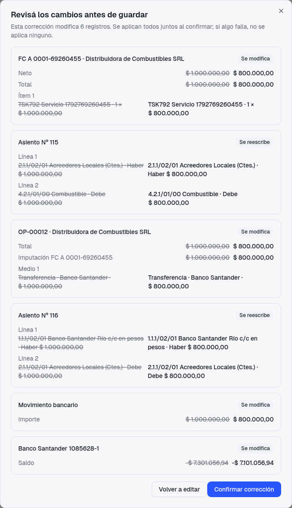
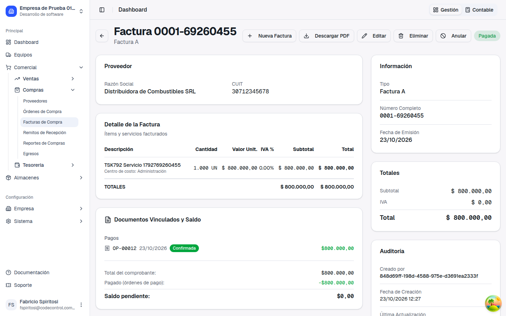
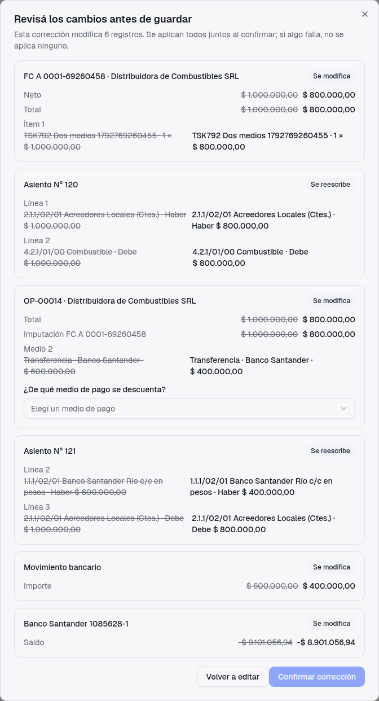
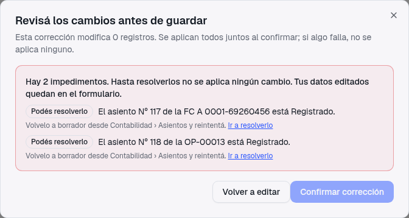
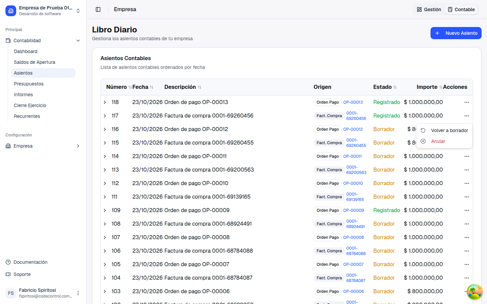
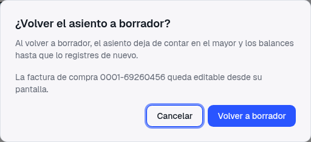
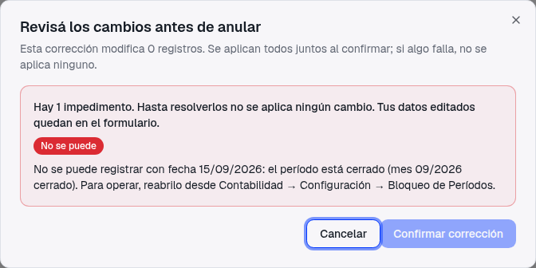
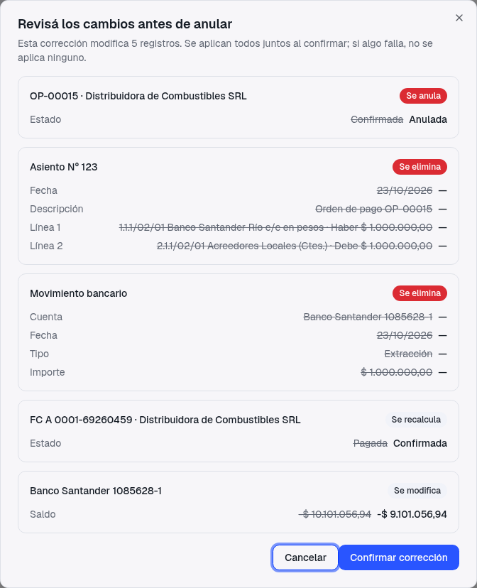

Guía de presentación — qué pediste, qué cambió, cómo se edita, elimina o anula paso a paso, qué te avisa el sistema cuando no se puede y qué tenés que tener en cuenta
"Si el período no está cerrado, se tiene que poder modificar." Pedido original del ticket
Hasta ahora, una factura o una orden de pago confirmada no se podía tocar: si te equivocabas en un importe tenías que anular todo y empezar de cero, y el asiento contable de esa factura quedaba vivo.
Una vez confirmada, había que ir de documento en documento: anular la orden de pago, corregir la factura, volver a pagar. Y no había forma de arreglar el asiento.
Mientras el período esté abierto, editás, eliminás o anulás directamente el comprobante confirmado. El sistema te muestra qué más cambia y lo aplica todo junto.
Un comprobante casi nunca está solo. Una factura de compra puede tener una orden de pago, que a su vez tiene un movimiento bancario, un asiento contable y un saldo en la cuenta. Si cambiás el importe de la factura, todo eso tiene que acompañarla.
Por eso, cuando corregís, no se guarda nada de inmediato. Primero el sistema arma una propuesta con todo lo que va a cambiar, mostrando cada dato "antes" (tachado) y "después". Vos la revisás y, si estás de acuerdo, la aplicás con un solo Confirmar. Se aplica todo junto o no se aplica nada.
Cargaste una factura de compra por $1.000.000 y la pagaste completa con una orden de pago. Te das cuenta de que el importe correcto era $800.000.
En este ejemplo la propuesta modifica 6 registros. Fijate cómo la baja de la factura se traslada sola a toda la cadena:

Si en lugar de bajar a $800.000 subiera a $1.200.000, la orden de pago no se toca (no se puede inventar un pago): la factura simplemente queda como "Pago parcial" con $200.000 pendientes.
Después de confirmar, la factura queda por $800.000, su estado final es Pagada, la orden de pago figura por $800.000 y el saldo pendiente es $0.

Cuando la orden de pago se pagó con más de un medio (por ejemplo, dos transferencias), el sistema no puede adivinar de cuál descontar la diferencia. En la propuesta aparece la pregunta "¿De qué medio de pago se descuenta?" y elegís uno. Hasta que lo elijas, el botón de confirmar queda deshabilitado.

Cuando una factura se pagó con varias órdenes, la diferencia se descuenta primero de la más reciente. Y si la orden pagaba varias facturas, solo cambia lo que corresponde a la factura corregida: las demás quedan exactamente igual.
Antes de aplicar nada, el sistema revisa que la corrección sea posible. Si hay algún impedimento, no se aplica ningún cambio y la propuesta te dice exactamente qué pasa. Hay dos tipos:
| Etiqueta | Qué significa | Ejemplos |
|---|---|---|
| Podés resolverlo | Lo podés arreglar vos y reintentar. | El asiento está Registrado. Ya se generó la liquidación de IVA del mes. El movimiento bancario se vinculó a mano o ya está conciliado. Un cheque fue endosado en otra orden. |
| No se puede | No hay forma de hacerlo desde acá. | El período está cerrado. La factura tiene CAE de AFIP. El pago en efectivo es de una sesión de caja ya cerrada. Un cheque ya fue cobrado o utilizado. |
Mientras un asiento está Registrado cuenta en los libros y en los balances, así que el sistema no lo toca sin que vos lo decidas. La propuesta te dice cuáles son y te lleva a resolverlo:



Para volver a borrador necesitás el permiso de aprobar asientos. Los asientos del cierre de ejercicio y los de anulación (contraasientos) no se pueden volver a borrador.

La propuesta también te dice dónde reabrirlo: Contabilidad → Configuración → Bloqueo de Períodos.
Las dos opciones están en el menú … de cada fila del listado y en el encabezado del detalle del comprobante. Funcionan igual que editar: abren la propuesta, la revisás y confirmás.
| Eliminar | Anular | |
|---|---|---|
| Qué hace | Borra el comprobante como si nunca se hubiera cargado. | Lo deja en el listado con estado "Anulado", como constancia. |
| El asiento | Tiene que estar en borrador; se elimina junto con el comprobante. | Si está en borrador se elimina; si está Registrado, se genera el contraasiento con la fecha del comprobante. |
| Cuándo conviene | Una carga equivocada que no debería figurar. | Un comprobante que existió y dejó de valer. |

Si anulás o eliminás una factura que tenía pagos, el pago que solo cancelaba esa factura se elimina; si la orden pagaba varias facturas, solo pierde la imputación de la factura anulada y sigue pagando las demás.
| Comprobante | Editar | Eliminar / Anular |
|---|---|---|
| Factura de compra | Sí | Sí |
| Factura de venta (no electrónica) | Sí (no cambia punto de venta, tipo ni número) | Sí |
| Factura de venta con CAE de AFIP | No: nota de crédito | No: nota de crédito |
| Orden de pago | Sí | Sí |
| Recibo de cobro | Sí | Sí |
| Movimiento de fondos | Sí | Sí |
Editar requiere permiso de modificar en el módulo del comprobante; Eliminar y Anular, permiso de eliminar. Volver a borrador un asiento requiere el permiso de aprobar en Asientos. Los botones que no tengas permitidos no aparecen.